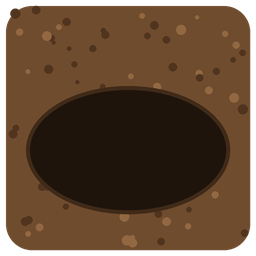
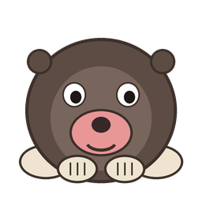
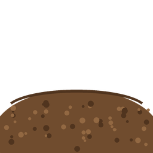

La mia talpa
ADESSO: ripasso, poi verificaالآن: المراجعة، ثم الاختبار · 现在：先复习，再考试
الخُلد الخاص بي
我的地鼠
1INF · 14/10/2026
Come sta andando la lezione · كيف يسير الدرس · 课堂进展
I votiالعلامات · 分数Il backlogقائمة الاقتراحات · 建议列表Il monitor della lezioneمراقبة الدرس · 课堂监控Cosa è cambiato oggi nel giocoما الجديد في اللعبة · 游戏里的新变化La classificaالترتيب · 排行榜La situazione della classeوضع القسم · 全班情况
Il mio punto · وضعي · 我的情况 (scrivi il tuo nome al Passo 2 · 在第2步写你的名字)
–personaggi proposti
شخصيات مقترحة · 提出的角色
شخصيات مقترحة · 提出的角色
–personaggi nel gioco
شخصيات في اللعبة · 进入游戏的角色
شخصيات في اللعبة · 进入游戏的角色
–il mio voto
علامتي · 我的分数
علامتي · 我的分数
–classifica del personaggio migliore
ترتيب أفضل شخصية · 最佳角色排名
ترتيب أفضل شخصية · 最佳角色排名
Spiegalo in 30 secondi · اشرحه في 30 ثانية · 30秒讲清楚
Se entra qualcuno e ti chiede «che cosa state facendo?», rispondi con queste 4 frasi. Dille a voce al tuo compagno, poi scambiatevi.
إذا دخل أحد وسألك «ماذا تفعلون؟»، أجب بهذه الجمل الأربع. قلها بصوتك لزميلك، ثم تبادلا.
如果有人进来问你「你们在做什么？」，就用这4句话回答。先说给同学听，然后交换。
- Tutta la classe lavora su un solo programma: il gioco della talpa.كل الصف يعمل على برنامج واحد: لعبة الخُلد.全班一起做同一个程序：打地鼠游戏。
- Ognuno ha chiesto una modifica: «metti il mio personaggio nel gioco». Si chiama Pull Request, una richiesta.كل واحد طلب تعديلًا: «ضع شخصيتي في اللعبة». اسمه Pull Request، أي طلب.每个人提出一个修改：「把我的角色放进游戏」。这叫 Pull Request，就是一个请求。
- Il prof controlla e la unisce al gioco: si chiama Merge. Ogni modifica fa nascere una versione nuova: v1.1, v1.2…الأستاذ يتحقق ويدمجها في اللعبة: اسمه Merge. كل تعديل يصنع نسخة جديدة: v1.1، v1.2…老师检查后把它合并进游戏：这叫 Merge。每个修改都产生一个新版本：v1.1、v1.2……
- Si aggiunge, non si cancella il lavoro degli altri. E tutto è scritto: backlog (le richieste) e changelog (che cosa è cambiato).نضيف ولا نمسح عمل الآخرين. وكل شيء مكتوب: backlog (الطلبات) و changelog (ما الذي تغيّر).只添加，不删除别人的成果。一切都有记录：backlog（请求清单）和 changelog（改了什么）。
1. Che cos'è una Pull Request?
2. Chi fa il Merge, cioè unisce la modifica al gioco?
3. Che cosa succede dopo ogni modifica?
4. Dove leggi che cosa è cambiato?
Teoria · Collaboriamo: un'unica app
Tutta la classe lavora a una sola app: il gioco «Acchiappa la talpa». Ognuno porta un pezzo.
كل الصف يعمل على تطبيق واحد: لعبة «اصطد الخُلد». كل واحد يجلب قطعة.
全班一起做同一个应用：「打地鼠」游戏。每个人带来一部分。
La tua richiesta: «Ecco il mio personaggio, mettilo nel gioco».
طلبك: «هذه شخصيتي، ضعها في اللعبة».
你的请求：「这是我的角色，把它放进游戏里」。
Chi scriverà il codice? Claude: un'intelligenza artificiale che programma. Il prof controlla e dice sì o no.
من سيكتب الكود؟ Claude: ذكاء اصطناعي يبرمج. الأستاذ يتحقق ويقول نعم أو لا.
谁来写代码？Claude：一个会编程的人工智能。老师检查，说可以或不可以。
Rispetta il lavoro degli altri · احترم عمل الآخرين · 尊重别人的成果
Nell'app ci sono già i pezzi dei tuoi compagni. Tu aggiungi il tuo pezzo. Non cancelli e non cambi i pezzi degli altri.
في التطبيق توجد قطع زملائك. أنت تضيف قطعتك. لا تمسح ولا تغيّر قطع الآخرين.
应用里已经有同学们的部分。你加上你的部分。不删除，也不修改别人的部分。
Regola: aggiungere sì, cancellare no.
القاعدة: الإضافة نعم، المسح لا.
规则：可以添加，不可以删除。
1. La richiesta: Pull Request · الطلب · 请求
Non metti tu il pezzo dentro l'app di tutti. Mandi una richiesta: «Ecco il mio personaggio, mettilo nel gioco». Nel lavoro vero si chiama Pull Request (richiesta di unire il tuo pezzo).
أنت لا تضع القطعة بنفسك في تطبيق الجميع. ترسل طلبًا: «هذه شخصيتي، ضعها في اللعبة». في العمل الحقيقي اسمه Pull Request (طلب دمج قطعتك).
你不自己把这部分放进大家的应用。你发一个请求：「这是我的角色，把它放进游戏」。在真正的工作里，这叫 Pull Request（请求合并你的部分）。
2. L'unione: Merge · الدمج · 合并
Il prof guarda la richiesta. Se va bene, unisce il tuo pezzo all'app: si chiama Merge (unione). Adesso l'app ha il tuo pezzo e quelli di tutti, insieme.
الأستاذ ينظر إلى الطلب. إذا كان جيدًا، يدمج قطعتك في التطبيق: اسمه Merge (دمج). الآن في التطبيق قطعتك وقطع الجميع معًا.
老师看你的请求。如果可以，就把你的部分合并进应用：这叫 Merge（合并）。现在应用里有你的部分，也有大家的部分。
App · التطبيق · 应用
+
Pull Request
→
Merge · دمج · 合并
La macchina delle versioni · آلة النسخ · 版本机器
Perché un programma cambia? Perché qualcuno chiede qualcosa. Le vostre richieste entrano nella macchina, ed esce una versione nuova del gioco.
لماذا يتغيّر البرنامج؟ لأن أحدًا يطلب شيئًا. طلباتكم تدخل الآلة، وتخرج نسخة جديدة من اللعبة.
程序为什么会改变？因为有人提出了请求。你们的请求进入机器，出来的是游戏的新版本。
⚙
Claude scrive il codice
il prof controlla
Claude scrive il codice
il prof controlla
v1.1versione nuova
نسخة جديدة · 新版本
نسخة جديدة · 新版本
Richieste (Pull Request)
Merge → gioco
La vita di una richiesta, dall'inizio alla fine:
حياة الطلب، من البداية إلى النهاية:
一个请求从开始到结束的过程：
1. Proposta→2. In fila nel backlog→3. Si lavora nel suo ramo→4. Controllo del prof→5. Merge→6. Versione nuova→7. La vedi nel gioco
1. اقتراح ← 2. في قائمة الانتظار ← 3. العمل في فرعه ← 4. تحقق الأستاذ ← 5. الدمج ← 6. نسخة جديدة ← 7. تراها في اللعبة
1. 提出 → 2. 在清单里排队 → 3. 在自己的分支里做 → 4. 老师检查 → 5. 合并 → 6. 新版本 → 7. 在游戏里看到
Come vedere perché e come è cambiato il gioco? Ci sono tre posti:
كيف ترى لماذا وكيف تغيّرت اللعبة؟ هناك ثلاثة أماكن:
怎么看游戏为什么、怎么改变了？有三个地方：
Il backlogTutte le richieste: chi, che cosa, quando, a che punto è. · كل الطلبات: من، ماذا، متى، أين وصلت. · 所有请求：谁、什么、什么时候、进行到哪一步。
Il changelogIl diario delle versioni: che cosa è cambiato e perché, file per file. · سجل النسخ: ما الذي تغيّر ولماذا. · 版本日记：改了什么、为什么改。
La descrizione della versioneChi è entrato e tutti i personaggi presenti. Puoi anche giocare ogni versione. · من دخل وكل الشخصيات. يمكنك لعب كل نسخة. · 谁加入了、所有角色。每个版本都能玩。
Si lavora a giri (si chiama Agile):
نعمل على جولات (اسمها Agile):
我们一轮一轮地工作（叫 Agile）：
1. Pull RequestMandi il tuo personaggio
→
ترسل شخصيتك
发送你的角色
2. BacklogLa richiesta entra in fila
→
الطلب يدخل القائمة
请求进入清单
3. CodiceClaude lo mette nel gioco
→
Claude يضعه في اللعبة
Claude 把它放进游戏
4. MergeIl prof controlla e unisce
→
الأستاذ يتحقق ويدمج
老师检查并合并
5. Versione nuovaGiochi con il tuo personaggio. Poi un altro giro!
نسخة جديدة، ثم جولة أخرى
新版本，然后再来一轮
Passo 1 · Gioca
- Premi il bottone verde e gioca 2 minuti. Poi torna qui.اضغط الزر الأخضر والعب دقيقتين. ثم ارجع إلى هنا.按绿色按钮，玩2分钟。然后回到这里。Gioca · العب · 玩
Passo 2 · Il tuo personaggio: la foto
Serve aiuto per ritagliare o salvare la foto? La mini-guida · دليل صغير · 小指南
- Scrivi il tuo nome e cognome.اكتب اسمك واسم عائلتك.写你的名字和姓。
- Ti serve una tua foto in cui si vede la testa: quella del tuo profilo social o una foto tessera. Non ce l'hai? Alza la mano: te la fa il prof.تحتاج صورة لك يظهر فيها رأسك: صورة حسابك في وسائل التواصل أو صورة شخصية. ليست عندك؟ ارفع يدك: الأستاذ يلتقطها لك.你需要一张能看到你的头的照片：社交账号的头像，或者证件照。没有？举手：老师给你拍。
- Sulla foto premi il tasto destro e scegli «Copia immagine». Torna qui e premi Ctrl+V. Se la foto è un file sul computer, premi «Scegli la foto».على الصورة اضغط الزر الأيمن واختر «Copia immagine» (نسخ الصورة). ارجع إلى هنا واضغط Ctrl+V. إذا كانت الصورة ملفًا على الحاسوب، اضغط «Scegli la foto» (اختر الصورة).在照片上按右键，选「Copia immagine」（复制图片）。回到这里按 Ctrl+V。如果照片是电脑里的文件，按「Scegli la foto」（选照片）。
- Taglia: trascina la foto col mouse e usa la barra per lo zoom. Nel quadrato resta solo la testa.اقصص: اسحب الصورة بالفأرة واستعمل الشريط للتكبير. في المربع يبقى الرأس فقط.裁剪：用鼠标拖动照片，用滑块放大。方框里只留下头。La tua foto · صورتك · 你的照片
- Premi «Tieni questa». Puoi tenere più foto: rifai dal punto 2 con un'altra.اضغط «Tieni questa» (احتفظ بهذه). يمكنك الاحتفاظ بعدة صور: أعد من النقطة 2 بصورة أخرى.按「Tieni questa」（留下这张）。可以留下好几张：换一张照片，从第2点再做。
- Clicca una foto e guardala nel buco. Scegli quella dove si vede meglio la tua testa.انقر على صورة وانظر إليها في الحفرة. اختر التي يظهر فيها رأسك أفضل.点一张照片，看它在洞里的样子。选最能看清你的头的那张。



- Rispondi: Sì o No.أجب: نعم أو لا.回答：是或否。
Passo 3 · La tua richiesta
- Scrivi come vuoi il tuo personaggio cartoonesco: com'è, che colori, che cosa aggiungere (sport, squadra, cappello, occhiali…). Il prof lo crea partendo dalla tua foto.اكتب كيف تريد شخصيتك الكرتونية: شكلها، ألوانها، ماذا تضيف (رياضة، فريق، قبعة، نظارات…). الأستاذ يصنعها من صورتك.写你想要的卡通角色是什么样子：样子、颜色、要加什么（运动、球队、帽子、眼镜……）。老师会用你的照片来做。
- Premi il bottone verde: partono la foto e la richiesta.اضغط الزر الأخضر: تُرسل الصورة والطلب.按绿色按钮：照片和请求一起发出去。
- Manda foto e richiesta con il Modulo «Consegna». Fai questi passi, uno alla volta:أرسل الصورة والطلب بنموذج «Consegna» (التسليم). اتبع هذه الخطوات، واحدة بعد الأخرى:用「Consegna」（提交）表单发送照片和请求。一步一步做：
- Premi «Scarica la foto»: la foto ritagliata va nella cartella «Download».اضغط «Scarica la foto» (نزّل الصورة): تذهب الصورة المقصوصة إلى مجلد «Download» (التنزيلات).按「Scarica la foto」（下载照片）：裁好的照片会保存到「Download」（下载）文件夹。
- Premi «Apri il Modulo».اضغط «Apri il Modulo» (افتح النموذج).按「Apri il Modulo」（打开表单）。Apri il Modulo · افتح النموذج · 打开表单
- Nel Modulo, prima casella «Cosa consegni?»: scrivi foto.في النموذج، الخانة الأولى «Cosa consegni?»: اكتب foto.在表单里，第一个框「Cosa consegni?」：写 foto。
- Torna qui e premi «Copia la richiesta».ارجع إلى هنا واضغط «Copia la richiesta» (انسخ الطلب).回到这里，按「Copia la richiesta」（复制请求）。
- Nel Modulo clicca la seconda casella e premi Ctrl+V.في النموذج انقر الخانة الثانية واضغط Ctrl+V.在表单里点第二个框，按 Ctrl+V。
- Clicca «Aggiungi file», poi il bottone blu «Sfoglia», apri la cartella «Download», scegli la foto 1INF_…_foto.jpg e clicca «Apri».انقر «Aggiungi file» (إضافة ملف)، ثم الزر الأزرق «Sfoglia» (تصفّح)، افتح مجلد «Download»، اختر الصورة 1INF_…_foto.jpg وانقر «Apri» (فتح).点「Aggiungi file」（添加文件），再点蓝色按钮「Sfoglia」（浏览），打开「Download」文件夹，选照片 1INF_…_foto.jpg，点「Apri」（打开）。
- In basso clicca il bottone viola «Invia». Fatto!في الأسفل انقر الزر البنفسجي «Invia» (إرسال). تمّ!在下面点紫色按钮「Invia」（发送）。完成！
- Aspetta: il prof controlla la foto. Qui sotto compare «Va bene» o «Rifalla».انتظر: الأستاذ يتحقق من الصورة. يظهر هنا «Va bene» (جيد) أو «Rifalla» (أعدها).等一下：老师检查照片。下面会出现「Va bene」（可以）或「Rifalla」（重做）。In attesa · في الانتظار · 等待中
Passo 4 · Il tuo personaggio entra nel gioco
Il prof crea i personaggi quando ha le foto di tutti. Il tuo personaggio te lo restituisce qui sotto, in «Le tue foto e il tuo personaggio». · 老师收齐所有照片后做角色，你的角色会放在下面「Le tue foto」里还给你。
- Il prof crea il personaggio e lo mette nel gioco: è una versione nuova. In «Il mio punto», in alto, vedi i tuoi personaggi nel gioco.الأستاذ يصنع الشخصية ويضعها في اللعبة: هذه نسخة جديدة. في «Il mio punto» في الأعلى ترى شخصياتك في اللعبة.老师做好角色，放进游戏：这是一个新版本。在上面的「Il mio punto」（我的情况）里能看到你进入游戏的角色。
- Apri «Il backlog» e il changelog: leggi che cosa è cambiato. Poi gioca e cerca il tuo personaggio.افتح «Il backlog» وسجل التغييرات: اقرأ ما الذي تغيّر. ثم العب وابحث عن شخصيتك.打开「Il backlog」和更新日志：看看改了什么。然后玩游戏，找你的角色。Gioca · العب · 玩
Seconda e terza Pull Request · cambia il tuo personaggio
Il tuo personaggio è nel gioco? Puoi chiedere di cambiarlo. Non serve una foto nuova: scrivi che cosa vuoi cambiare. Ogni richiesta è una Pull Request e diventa una versione nuova del gioco.
شخصيتك في اللعبة؟ يمكنك طلب تغييرها. لا تحتاج صورة جديدة: اكتب ماذا تريد أن تغيّر. كل طلب هو Pull Request ويصبح نسخة جديدة من اللعبة.
你的角色已经在游戏里了？可以要求修改。不需要新照片：写你想改什么。每个请求都是一个 Pull Request，会变成游戏的一个新版本。
- Scrivi il tuo nome e cognome al Passo 2, poi qui scrivi la modifica.اكتب اسمك واسم عائلتك في الخطوة 2، ثم اكتب هنا التعديل.在第2步写你的名字和姓，然后在这里写修改。
- Premi il bottone verde.اضغط الزر الأخضر.按绿色按钮。Premi «Copia la modifica», poi «Apri il Modulo». Nel Modulo: prima casella scrivi modifica, seconda casella Ctrl+V, poi «Invia».اضغط «Copia la modifica» (انسخ التعديل)، ثم «Apri il Modulo». في النموذج: الخانة الأولى اكتب modifica، الخانة الثانية Ctrl+V، ثم «Invia».按「Copia la modifica」（复制修改），再按「Apri il Modulo」。在表单里：第一个框写 modifica，第二个框按 Ctrl+V，然后按「Invia」（发送）。Apri il Modulo · افتح النموذج · 打开表单
Le tue foto e il tuo personaggio · صورك وشخصيتك · 你的照片和角色
Se il prof ti ha fatto la foto, qui la puoi scaricare. Scrivi la tua password personale (quella dei libri) e premi «Apri».
إذا التقط لك الأستاذ صورة، يمكنك تنزيلها هنا. اكتب كلمة المرور الشخصية (التي للكتب) واضغط «Apri» (افتح).
如果老师给你拍了照片，可以在这里下载。写你的个人密码（看书用的那个），按「Apri」（打开）。
Passo 5 · Il premio: vota il personaggio migliore
Faremo una classifica dei personaggi: i primi tre vincono il premio dei personaggi migliori. Vota anche tu: puoi votare tutti, ma non il tuo personaggio.
سنعمل ترتيبًا للشخصيات: الثلاثة الأوائل يفوزون بجائزة أفضل الشخصيات. صوّت أنت أيضًا: يمكنك التصويت للجميع، إلا لشخصيتك.
我们会给角色排名：前三名获得最佳角色奖。你也来投票：所有角色都可以投，但不能投你自己的。
Vota · صوّت · 投票
Domanda in più · solo per Yinlin L. (PC 24)
Yinlin，这是 Nicola 老师只问你的一个问题。不是作业，不打分。
早上你进学校的时候，在院子里推着自行车走。你为什么这样做？为什么不一直骑到自行车停车的地方？
在下面写你的回答，可以用中文写。然后按绿色按钮。
Per Yinlin: al mattino entri a scuola spingendo la bici nel cortile. Perché? Perché non arrivi pedalando fino al parcheggio delle bici? Domanda del prof, non è un compito e non ha voto.